Learning to Factorize and Relight a City
ECCV 2020
Rotating the Sun
Modeling sun azimuth is important to our factorization for the following reasons:
- Sun azimuth is mathematically intuitive concept, its value ranges from [0, 2π] and it encodes an orientation of the world.
- Despite it's simplicity, changing azimuth has a complex effect on a scene's appearance.
When learning our disentangled factors, our model exploits the simplicity of the underlying representation. But when we train it to decode relit shading images, the generator must learn the rich interactions between azimuth and geometry. We show various panoramic images and the effect of manually rotating our azimuth (which is succinctly given to the generator as an angle).
We show scenes where the sun moves with the sliders below.
New York City, USA
Paris, France
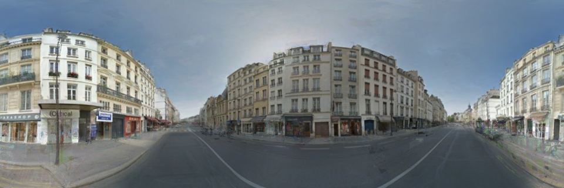
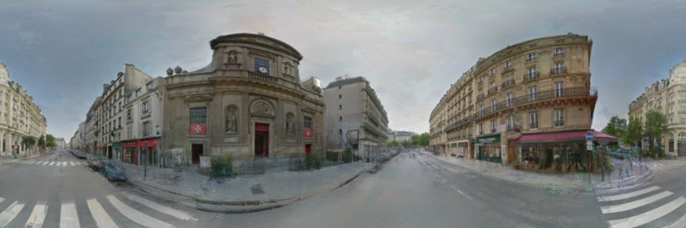
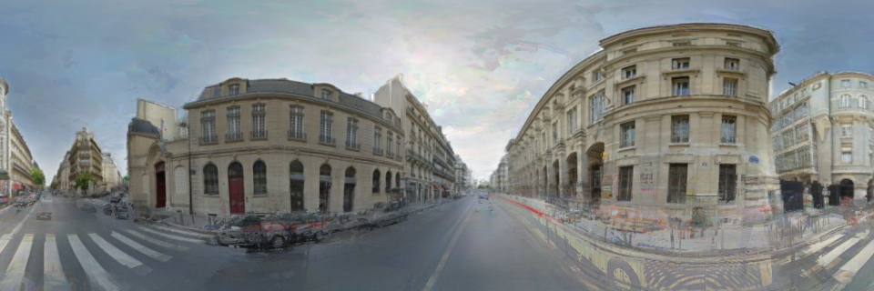
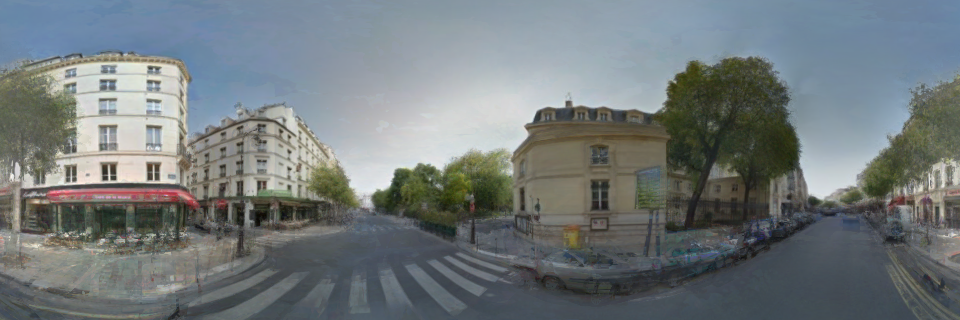
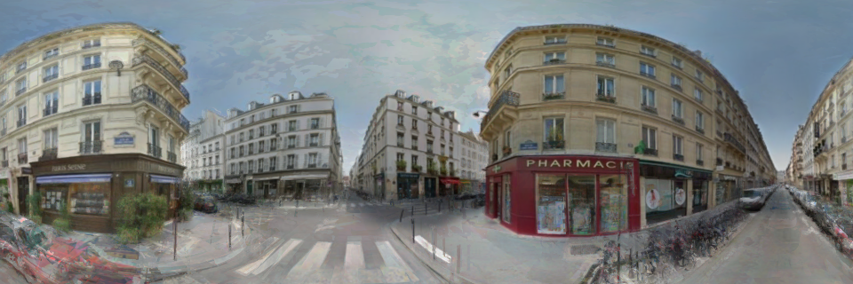
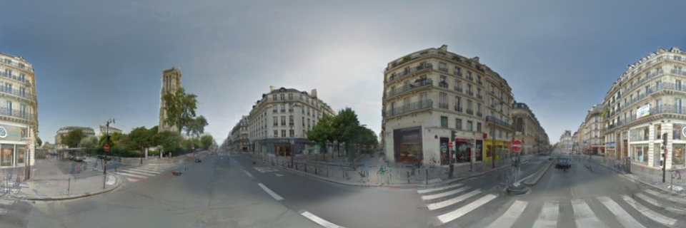
San Francisco, USA
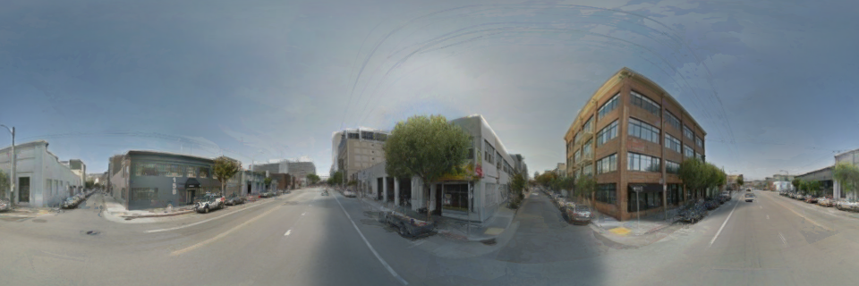
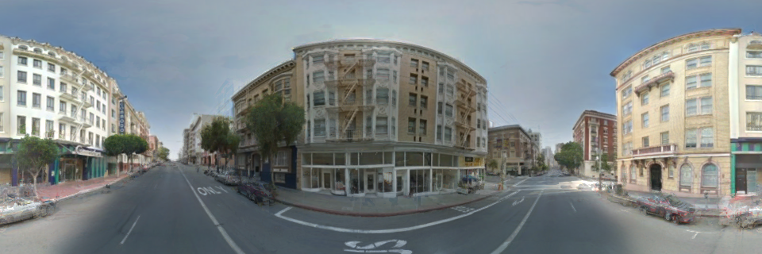
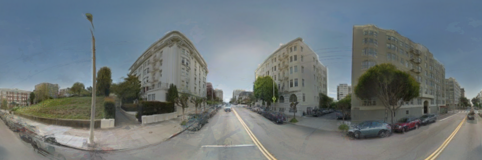
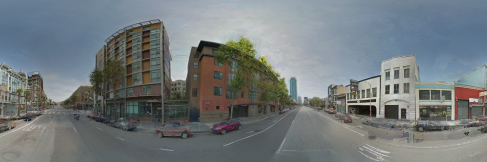
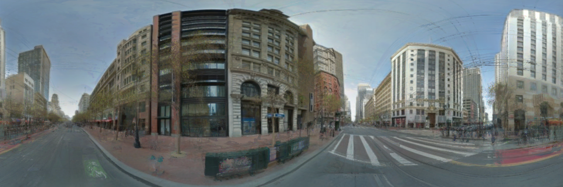
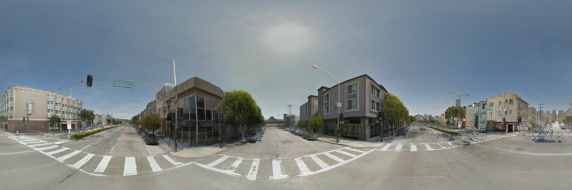
London, United Kingdom
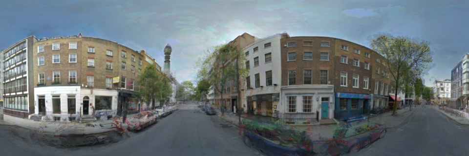
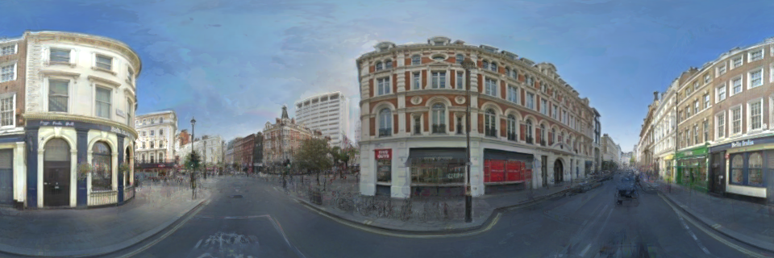
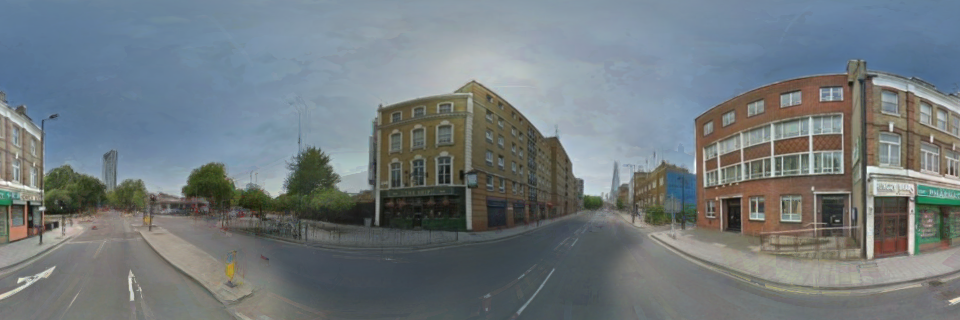
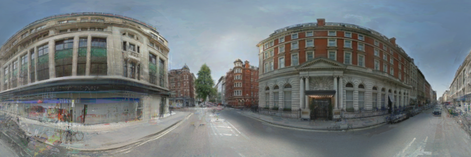
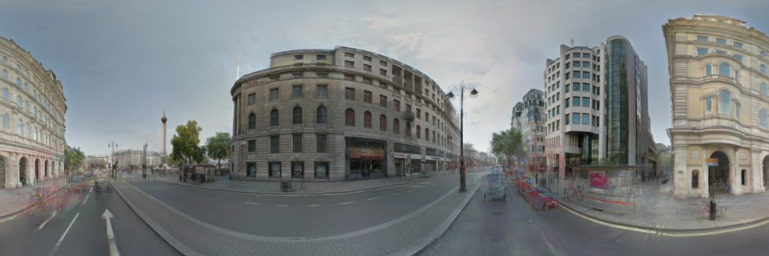
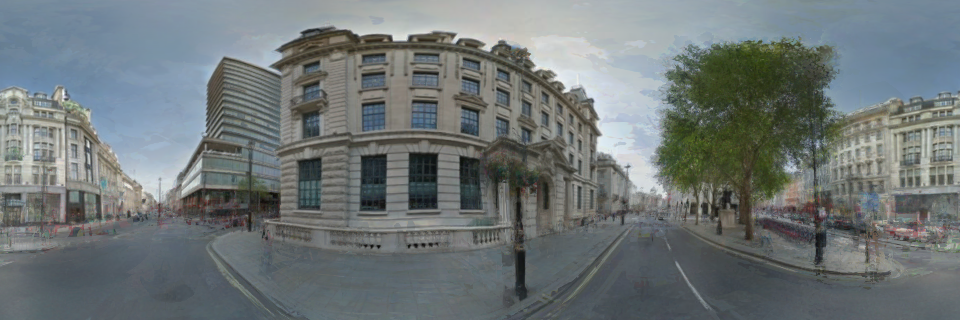